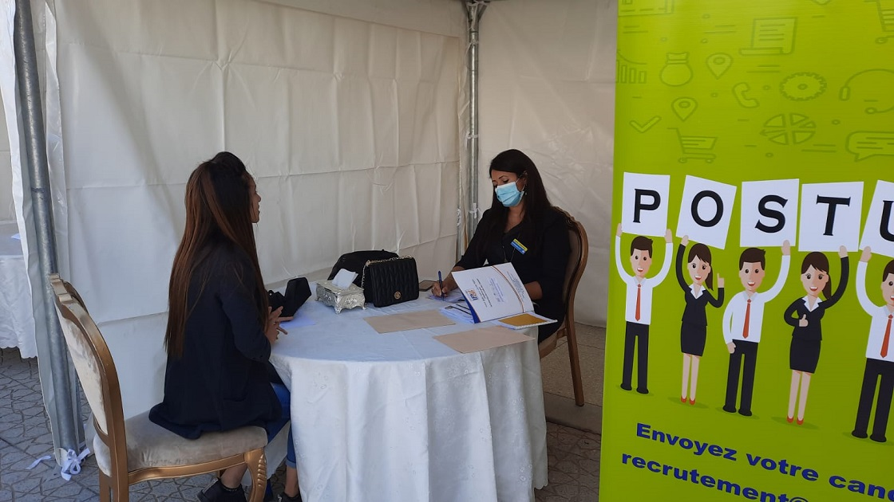

Renforcement de la participation économique des femmes
Pourquoi mettre en œuvre ce projet?
- Les chiffres sur l’activité économique des femmes au Maroc sont alarmants. Malgré les réformes entreprises au niveau juridique et programmatique, le pays reste à la traîne. Il est classé 172ème sur 181 pays en matière de participation économique des femmes, et le taux d'activité des femmes au Maroc est en constante régression, passant de 28% en 2012 à seulement 20% en 2020 (alors que la moyenne mondiale est de 62%). Le taux d'emploi des femmes est également en nette détérioration, passant de 30% en 1999 à 18,6% en 2019.
- Les réformes entreprises par le Maroc se heurtent à plusieurs obstacles : mise en œuvre incomplète des programmes prévus, faible intégration de l'approche genre dans les programmes et projets structurants, faible prise en compte de la dimension genre au niveau territorial…
- Les femmes sont confrontées dans leur recherche d’emploi à plusieurs obstacles qui reflètent l’enchevêtrement des logiques sociales, économiques, et culturelles qui sont au cœur du travail féminin. Elles sont exposées à des contraintes à la mobilité, aux difficultés de conciliation entre vie professionnelle et vie privée dans un contexte de partage inégal des responsabilités domestiques, à l’absence de solution pour la garde d’enfants, aux violences de genre y compris dans l’espace public, aux stéréotypes qui biaisent souvent l’orientation professionnelle des femmes, etc…
- les dispositifs publics de l’emploi prévoient peu de mesures spécifiques pour permettre d’atténuer l’impact de ces obstacles sur l’accès des femmes à l’emploi. Les principaux dispositifs ciblent les chercheuses d’emploi et non les femmes dites « inactive »et les causes de leurs « inactivités ». Or, ces dernières représentent 80% des femmes, et sont les plus exposées à ces obstacles.
En quoi consiste ce projet?
Il s’agit de la mise en œuvre de réponses pratiques aux freins d’accès des femmes au marché de l’emploi. Cette démarche sera réalisée en quatre phases :
- Atténuation de l’impact des freins à l’emploi des femmes: via un accompagnement juridique et/ou psychosocial individualisé par une équipe d’intervenantes sociales, de psychologues, de juriste et de conseillers emploi.
- Renforcement des soft skills et des hard skills des femmes: selon leurs besoins et leurs projets professionnels. Elles ont dans ce sens accès à des formations professionnelles et des programmes de renforcement des soft skills (estime de soi, leadership, communication, …). Il est à noter que durant cette phase, les femmes bénéficient d’une aide financière pour la mobilité, la prise en charge des enfants…
- Accompagnement des femmes à rechercher active de l’emploi: via un coaching individualisé, l’accès à des ateliers de techniques de recherche d’emploi et des clubs de recherche active d’emploi.
- Mise en relation: relation entre les femmes accompagnées dans le cadre du projet et des entreprises locales en recherche de talents féminins via l’organisation d’évènements ponctuels de recrutement, tels que les « forums de l’emploi au féminin ».
Les freins à l’emploi des femmes sont également dus à des politiques de l’emploi souvent aveugles au genre. Aussi, le projet prévoit l’organisation d’activités de réflexion, de concertation, de planification, et de coordination autour des politiques territoriales de l’emploi. Ces activités impliqueront les acteurs des politiques territoriales, les acteurs de la formation professionnelle, les acteurs de l’intermédiation pour l’emploi, les chambres professionnelles, les associations d’entreprises, et les acteurs et associations des droits des femmes. Parmis les activités prévues :
- Organisation d’un séminaire nationale « genre et politiques territoriales de l’emploi ».
- Organisation d’une Journée d’étude « quel accès à l’emploi pour les habitantes des quartiers précaires ».
- Organisation d’une table ronde « Quelles synergies entre les acteurs de la prise en charge des femmes en situation de précarité, de la formation professionnelle, de l’emploi, et des politiques territoriales ».
- Organisation d’activités de conception et de présentation de partenariats et de plans d’actions communs.
Quels sont les partenaires?
Lors des trois dernières années, nous avons signé un ensemble de partenariats formels, et renforcé notre coordination avec les acteurs suivants:
- acteurs des politiques territoriales: commune urbaine de Fès ;
- acteurs publics de l’emploi: l’Office de la Formation Professionnelle et de la Promotion du Travail ; l’Agence Nationale pour la Promotion de l’Emploi et des Compétences.
- acteurs de la prise en charge: l’Entraide Nationale, l’Association Saiss de Développement et de Solidarité, Le Centre Multidisciplinaire Al Amal pour l’autonomisation des femmes, Le Centre Multidisciplinaire de Zouagha pour l’Insertion des Femmes, L’Association Marocaine de Planification Familiale, L’Association perspectives roses pour les développements durables, le Centre Multifonctionnel Batha pour l’Autonomisation des Femmes.
- Groupements d’entreprises: la Confédération Générale des Entreprises du Maroc, l’Association Marocaine des Industries de Textile et d’Habillement.
- Chambres professionnelles: la Chambre de Commerce de l’Industrie et des Services, la chambre de l’artisanat.
Activités du projet
Soutenez le programme
Nous avons besoin de votre soutien pour continuer notre travail. Votre don nous aidera à poursuivre nos actions en faveur de l'égalité des genres et de l'autonomisation des femmes.
Résultats prévues du projet
- Au moins 1000 femmes victimes de violences deviendront des chercheuses actives d’emploi suite à l'accompagnement social et à la réduction des freins à l’emploi auxquels elles sont exposées.
- Au moins 700 femmes auront acquis des compétences en communication, en résolution de problèmes, en travail en équipe, et en techniques de recherche d’emploi grâce à la formation en soft skills.
- Au moins 500 femmes auront acquis des compétences professionnelles conformes à leur domaine d’intérêt.
- Au moins 500 femmes auront réalisé un stage dans leur domaine d'intérêt grâce à l'accompagnement dans la recherche active d'emploi.
- Au moins 200 femmes auront trouvé un emploi formel dans leur domaine de compétence grâce à l'accompagnement dans la recherche active d'emploi.

Forum de l’emploi au féminin
Il s’agit d’une réponse pratique aux difficultés d’accès des femmes au marché de l’emploi. Ce rendez-vous de l’égalité professionnelle s’emploie à ... lire la suite

Création de groupes d'entraide et de veille communautaire
Des femmes victimes de violences, usagères du centre multifonctionnel Batha pour l’autonomisation des femmes (géré par notre association IPDF), ont été accompagnées dans la création d’un groupe d’entraide et de veille communautaire nommé « nous sommes devenues militantes »... lire la suite

réalisation de diagnostics urbains participatifs
La balade exploratoire organisée dans les quartiers de Louisates et Sahrij Gnaoua nous a permis de recueillir le vécu et le ressenti des habitantes en lien avec ... lire la suite

Création du réseau « TITRIT »
Ce collectif, coordonné par l’association IPDF, est composé de 24 associations locales qui interviennent directement auprès des femmes victimes de violences ou de pauvreté, et qui ... lire la suite

Séminaire nationale "entreprises, droits humains, et approche genre"
Il a permis de fournir des éléments de réflexion sur la problématique générale de l’emploi féminin dans sa relation à la fois avec le développement et avec les droits des femmes. Grâce aux estimables contributions... lire la suite